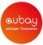
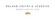
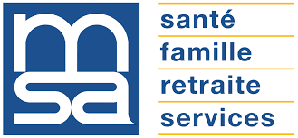
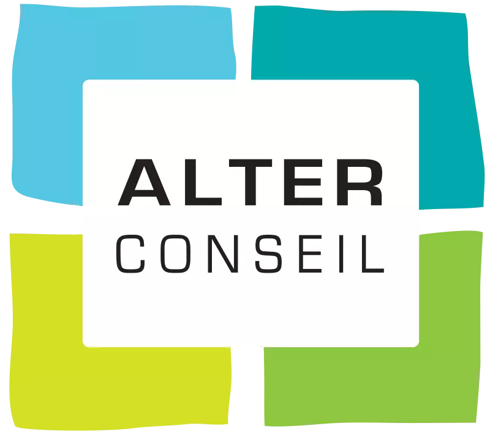

Alexandre Urbain
Développeur Freelance @EgoTech
J'ai travaillé pour eux :
A propos de moi
Bonjour, je suis Alexandre Urbain, passionné par le développement informatique depuis le collège. Je suis en tout premier lieu un développeur back-end mais mes années d'expériences m'ont permis de devenir un touche à tout aussi bien à l'aise en front-end, en déploiement continue, en méthodologie agile, en utilisation de cloud, etc...
Ma principale valeur ajoutée en dehors de ma technicité, de mon expérience et de ma polyvalence est ma capacité à comprendre une problématique métier et à y apporter une solution technique.
Compétences
BACK/DEVOPS
FRONT
Parcours professionnel

- Développer l'activité de l'agence
- Apporter mon expertise technique aux équipes
- Aider les agences lors des phases de recrutement
- Représenter le savoir-faire de l'entreprise en étant en mission chez le client
- Une première mission de 3 mois dans une équipe en tant que développeur Backend Kotlin
- Une seconde mission de 3 mois dans une équipe en tant que développeur Frontend Angular
- Développer une expérience utilisateur accessible et innovante pour accompagner chacun avec bienveillance et efficacité
- Apporter aux entreprises une solution qui leur fait gagner du temps, leur apporte de la donnée actionnable et protège l’anonymat de tous dans un écosystème hyper-sécurisé.
- Accompagner l'entreprise dans sa stratégie digitale
- Aux transporteurs d'avoir de la visibilité en ligne, d'y faire du commerce et d'automatiser des tâches administratives (paiement en ligne, facturation, suivi de commande, etc...)
- A leur client d'accéder à une interface de vente facilitant la démarche d'achat.

Projets :
- Winestock qui regroupe les stocks internes et ceux des fournisseurs (fichiers XLS, CSV, TXT importés par HTTP/FTP/upload via un formulaire) dans une datatable JS (filtres/tris/recherche en serverside processing).
- Cashflow Manager qui est une application permettant de mettre en avant les défauts de paiement des clients et qui permet de générer un mail personnalisé afin de les relancer.
- Rupture Solver qui est un outil remontant les ruptures de stocks et les possibles solutions en cherchant dans le stock et dans les commandes d'achat à venir.
- Transport Manager qui est une solution de gestion du transport des produits de l'entreprise permettant de planifier et suivre les enlèvements et les expéditions de produits en communiquant directement avec l'entrepôt et en générant les bordereaux de livraison pour les transporteurs avec toutes les spécificités métier (douane, DAE, DSA, commentaires de préparation, de livraison, etc.)
- Mise en place de l’environnement de développement, de préproduction et de production
- Mise en place de l’intégration continue (Jenkins, Sonar, web hook git, Nexus, etc)
- Analyse des besoins, priorisation, chiffrage et développements des solutions (Spring-boot, Angular)
- Mise en place de la stack ELK et suivi des logs / métriques
- Connexion de l'application à des prestataires externes (échanges de fichiers, appels web automatisés)
- Sites web Casinodrive.fr, Casinoexpress.fr et MesCoursesCasino.fr
- Application des bornes Casinodrive
- Webservices fournis à l'application mobile MCasino
- Développement de la solution d'ecommerce alimentaire de CDiscount
- Travail en totale autonomie sur une technologie de 10 ans sans support et avec peu d’aide sur Internet.
- De nombreuses problématiques techniques et organisationnelles que l’équipe a constamment cherché à résoudre (via l’agilité entre autre).
- Participations aux réunions avec le client et au recrutement des nouveaux membres pour l’équipe
- Mise en place de Tests automatisés dans un environnement techniquement pauvre en outils (Java 1.4)
- Leader technique sur le projet, j'ai su tirer le meilleur de mon équipe dans des moments difficiles (turnover, limitations technologiques, blocages fonctionnels) et j'ai résolu de nombreux casse-têtes techniques.
- bordeaux.fr : refonte technique complète du site (équipe de 4 personnes) | principale tech: Jetspeed2
- Cultura : développement d'une application interne permettant la gestion de campagnes nationales pour le service achat (équipe de 7 personnes) | principale tech: Play framework
- Cofinoga : Mock d'Alfresco pour la marque blanche de l'espace client Cofinoga + aides ponctuelles | principale tech: Liferay
- Casinodrive : Dans les locaux de CDiscount à partir de mai 2013 (équipe de 10 personnes max avec du turnover tous les 3 mois) | principale tech: SAP Netweaver
Mission 2 : Conception et développement d'une solution PHP pour la gestion et l'affichage sur un mur d'écran de flux vidéo provenant de caméras de surveillance autoroutière
Diplômes
- participé à des projets de la Jumbo, la junior entreprise de la MIAGE
- travaillé chez McDonald's en tant qu'équipier en caisse pendant 4 mois
- été apprenti chez Adacis pendant 2 ans

Il consistait à traduire des robots AutoIt développés en robots Windev.
{kind=link}
{kind=link}

Il consistait à développer une appli de gestion basée sur la DB Access avec le langage VBA.
Portfolio
{kind=link}
Lumm
Google Cloud AppEngine, Java, MySQL, Spring Boot, Hibernate, Maven, Angular, SASS, Webpack, Gitlab CI
Lumm est une plateforme d'aide au bien-être mental des salariés
Projet from scratch, tout à réaliser
De nombreux rôles utilisateurs, des API externes, du publipostage, de quoi
s'occuper.
Bary
Google Cloud AppEngine, Java, MySQL, Spring Boot, Hibernate, Maven, Angular, SASS, Webpack, Gitlab CI
Site e-commerce pour les transporteurs routiers
Rôle de fondateur, expérience enrichissante de l'entrepreneuriat
Projet from scratch, tout à réaliser
Participation au recrutement, aux présentations, aux salons, au commerce
{kind=link}
{kind=link}
CasinoDrive, CasinoExpress, MesCoursesCasino
Java 1.4, SAP Netweaver 7.0, Struts, SAP CRM, Git, JQuery, HTML5/CSS3, Sécurité, Borne de paiement (Java Applet)
Développement des fronts des 3 sites d'e-commerce alimentaire du groupe Casino
(front + back)
Leader technique sur le projet (technos dépassées de 10 ans non documentées et
sans
support), représentant de l'équipe lors des réunions
Équipe projet fonctionnant sous un format agile (kanban, stand up meeting, TDD,
binomage, rétrospective, vision, etc.)
Mise en place de TUA (JUnit, Mockito compatible Java 1.4) et de tests Sélénium
(WebDriver)
Cultura
Play framework 1.2, Hibernate 3, SQL Server, POI, Bootstrap, JQuery, JQuery-UI, JqWidgets, HTML5, CSS3
Application de gestion permettant de gérer les campagnes d'achat du service
achats
Montée en compétence sur le Framework Play et sur JqWidget
Premier support de l’équipe sur le projet
Gros travail sur la performance (des millions de lignes de données à traiter)
{kind=link}
{kind=link}
Site de la mairie de Bordeaux
Java 1.6, JetSpeed 2, Spring MVC, JackRabbit, Mockito, HTML5, CSS3, JQuery, JQuery-UI
Refonte complète du site de la mairie (changement de techno)
Travail en régie dans les locaux de la mairie à l'hôtel de ville.
Création de portlets de A à Z (Bean, Controller, JSP, contexte Spring, requêtes
Jackrabbit et Javadoc).
Backup de mon chef de projet
Transfert de compétences et suivi des stagiaires
Application Vizird
Debian, J2EE, Apache, Tomcat, Mod-jk, JQuery, JQuery-UI, Curl
Application web permettant l'affichage de flux vidéos provenant de caméras de
surveillance autoroutière
Installation d’un environnement Apache-Tomcat avec mod-jk
Développement de l’interface web avec le système d’identification du ministère
(Cerbère)
Création du cahier des charges avec le client (MEEDDAT) à partir de son
expression
du besoin et des docs utilisateurs
{kind=link}
{kind=link}
CDiscount
C#, .NET Framework 4.5, CDiscount Framework, HTML5, CSS3, Responsive Design, JQuery
CDiscount.com passe à la livraison de produits alimentaire via des boutiques
Franprix situées à Paris
Montée en compétences sur .Net, C# et le framework CDiscount
Équipe projet fonctionnant sous un format agile (kanban, stand up meeting, TDD,
binomage, rétrospective, vision, etc.)
Mise en place de tests unitaires et de tests d'interface (Selenium).
Cofinoga
Java 1.6, Junit 3, Mockito, Alfresco
Refonte de l'espace client Cofinoga et du workflow Alfresco pour la mise en
place
d'une marque grise
Refactoring complet du Workflow Alfresco
Test Driven Development mis en place
{kind=link}
Recommandations
Olivier Croisier
Senior fullstack developer, Java expert & trainer, speaker
J'ai travaillé avec Alexandre sur un projet legacy et à l'environnement technique difficile. Particulièrement persévérant face aux problèmes complexes, Alexandre s'interroge sur les meilleures pratiques et sait se remettre en question face à de nouvelles propositions. Ajoutez à ça une dose de bonne humeur, et vous comprendrez que j'ai trouvé en Alexandre un collègue sympa et efficace !
Julien Alart
Co-Founder @Lumm
Alexis Barthélemy
Co-Founder @Lumm
Travailler avec Alexandre est un vrai bonheur. C’est un développeur complet, aux multiples compétences évidemment mais c’est aussi et surtout un partenaire précieux qui sait s’imprégner de toutes les problématiques d’une entreprise et y apporter un esprit critique constructif et utile à tous. Son engagement sans faille et sa capacité d’adaptation en font pour moi un atout indéniable pour des structures en phase de développement.